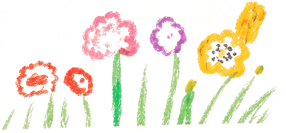
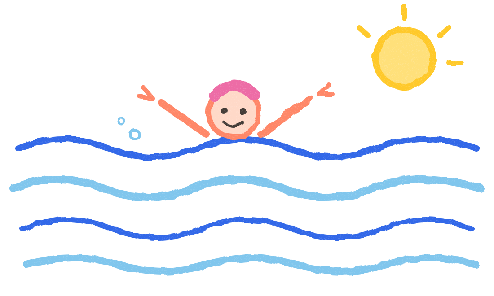
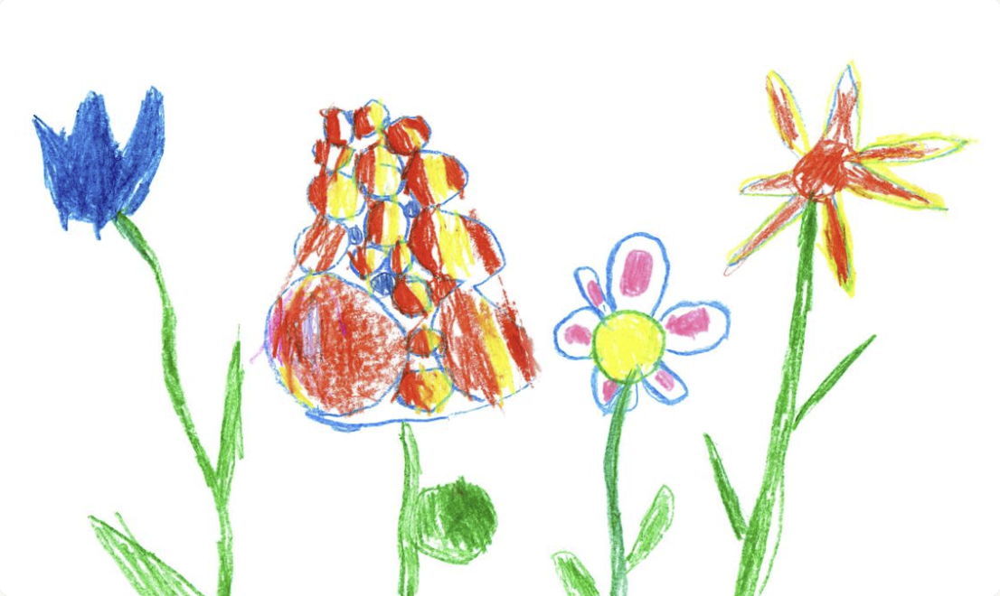
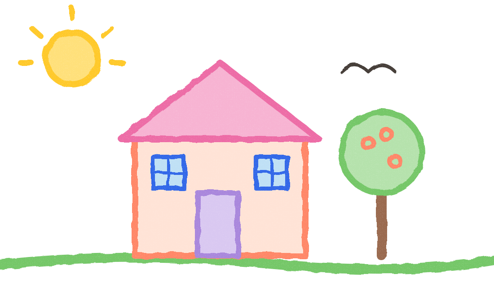
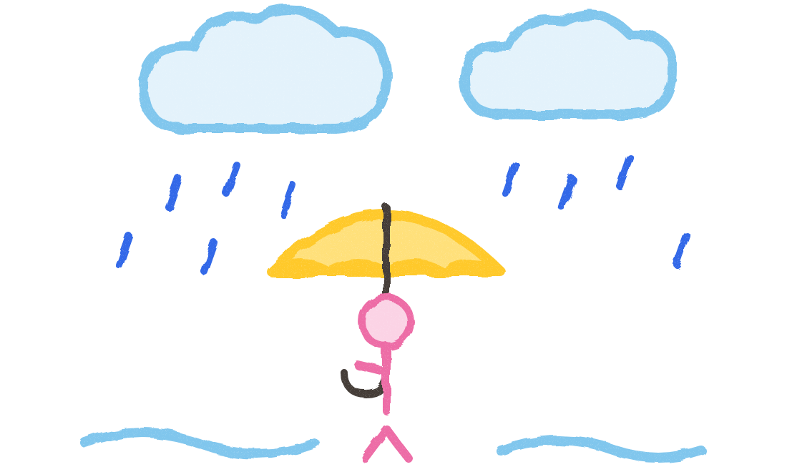

4월 12일 (일)
꽃밭
그리고, 말하고, 그림일기로.
아이가 그린 그림과 한 말을 꼼지가 한 편의 일기로 엮어요. 글을 몰라도 괜찮아요. 하루하루 모이면 세상에 하나뿐인 그림책이 됩니다.



빨간 꽃도 있고 노란 꽃도 있었어요.
오늘 무엇을 보고, 무슨 생각을 하고, 무엇이 가장 기억에 남았는지. 아이만의 말과 그림으로 하루 한 장씩 남겨 두면, 그 기록은 아이가 어떻게 자라왔는지 보여주는 가장 정직한 앨범이 돼요.
오늘 무슨 생각을 했는지, 아이가 한 말을 고치지 않고 그대로. 엉뚱한 말일수록 더 소중하니까요.
하루 중 가장 기억에 남은 한 장면을 아이의 그림으로. 종이에 그린 그림도 원본 그대로 보관해요.
말이 길어지고, 그림이 자세해지고, 직접 쓴 글씨가 생겨나요. 쌓인 하루들이 자라는 모습을 보여줘요.
하루 5분이면 충분해요. 아이가 하는 건 그리고 말하는 것뿐, 나머지는 꼼지가 도와요.

크레용·색연필·사인펜으로 화면에 바로 그리거나, 종이에 그린 그림을 찍어 올려요. 테두리와 기울기는 알아서 맞춰져요.
오늘 우리 집 앞에서 예쁜 꽃을 봤어요.
마이크를 누르고 오늘 이야기를 들려주면 꼼지가 받아 적어요. 직접 타이핑하거나 손글씨로 써도 좋아요.
날짜·날씨·기분과 함께 한 장의 그림일기로 완성. 부모님은 그날 페이지에 응원 한마디를 남길 수 있어요.
“꽃들이 나한테 인사하는 것 같았어”

“우산에서 빗소리가 노래했어”
“빨간 꽃도 있고 노란 꽃도 있었어”
“발차기를 열 번이나 했어!”
“할머니 집 나무에 빨간 열매가 있었어”
어떤 날은 꽃이, 어떤 날은 차가운 수영장 물이 가장 기억에 남아요. 꼼지일기는 그 한 가지를 묻고, 듣고, 그대로 남깁니다.
“나 어릴 때 어땠어?” 하고 묻는 날, 말 대신 펼쳐 줄 책이에요. 아이가 그리고 말한 하루가 한 페이지씩, 부모님의 한마디와 함께 담겨요.
오늘 우리 집 앞에서 예쁜 꽃을 봤어요. 빨간 꽃도 있고 노란 꽃도 있었어요.
작은 꽃도 놓치지 않고 바라보는 네 마음이 참 예뻐. 오늘의 봄을 오래 기억하자.
아빠랑 수영장에 갔어요. 물이 차가웠는데 발차기를 열 번이나 했어요!
매일 쓰는 건 무료로 충분해요. 더 많이 남기고 책으로 만들고 싶을 때 플러스를 선택하세요.
형제 할인 · 둘째부터는 플러스와 단짝 모두 30% 할인
출시 예정가이며 변경될 수 있어요. 실물 그림책 주문은 PDF 그림책 이후 순차적으로 열려요.
4–7세를 중심으로 3–9세까지 쓸 수 있어요. 글을 몰라도 말로 일기를 쓸 수 있고, 나이에 따라 기능을 막지 않아요.
아니요. 기본은 언제나 원본 그대로예요. 맞춤법 정리나 다듬기는 부모님이 고를 때만 적용되고, 원본과 나란히 비교한 뒤 언제든 되돌릴 수 있어요. 아이가 말하지 않은 내용은 덧붙이지 않아요.
네. 사진을 찍으면 종이 테두리를 찾아 기울기를 바로잡고, 크레용 색은 그대로 살려요. 찍은 원본은 따로 보관돼요.
기간을 고르면 하루 한 페이지로 자동 편집돼요. 표지와 내지 디자인을 고른 뒤 미리보기로 확인하고, 인쇄용 PDF로 내려받을 수 있어요.
가입과 관리는 부모님 계정으로 해요. 모든 일기는 비공개가 기본이고, 음성은 동의한 경우에만 저장해요. 언제든 원본을 내려받거나 삭제할 수 있어요.
“오늘 뭐가 제일 기억에 남았어?” 그 대답이 첫 페이지가 돼요.